Ai Zhang哀章
fl. 8–9 CE
A man of Zitong studying in the capital, recorded as fond of large talk. He cast the bronze casket, wrote the eleven names inside it, added his own, and became a duke.
Four centuries that gave China its name. Our episodes begin with the rebel army that took the Qin capital in 206 BCE and end in 184 CE, the year the empire's provinces stopped obeying it — the year the Three Kingdoms block below opens.
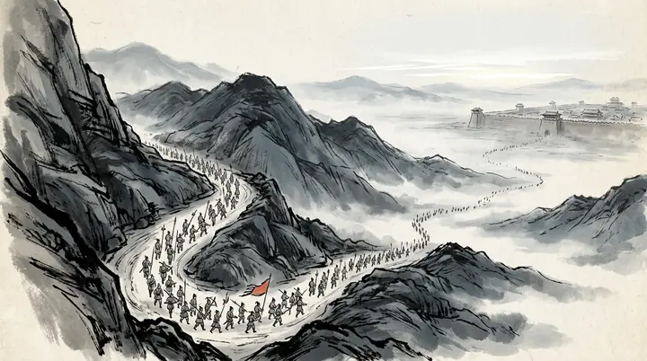
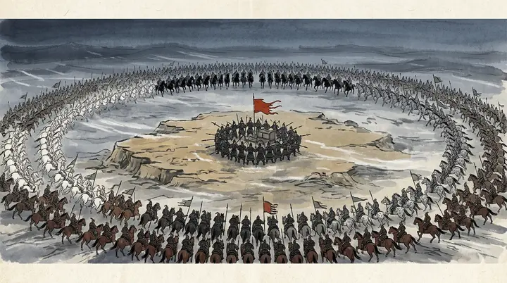
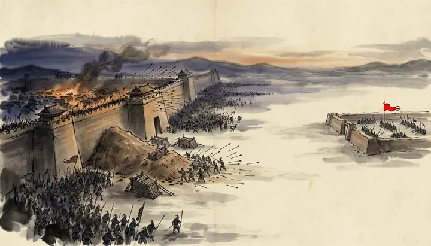
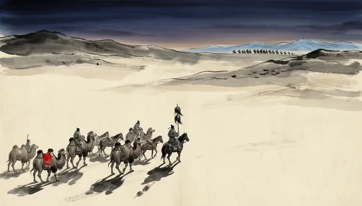
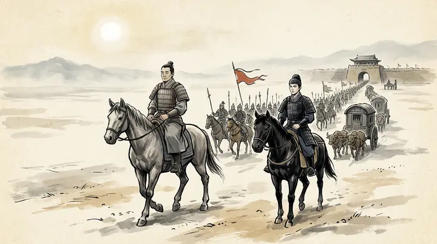
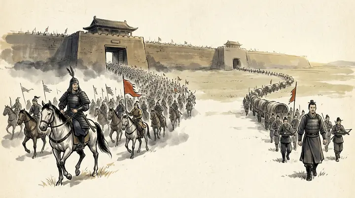
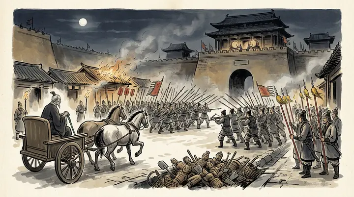
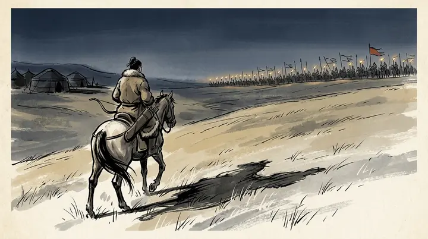
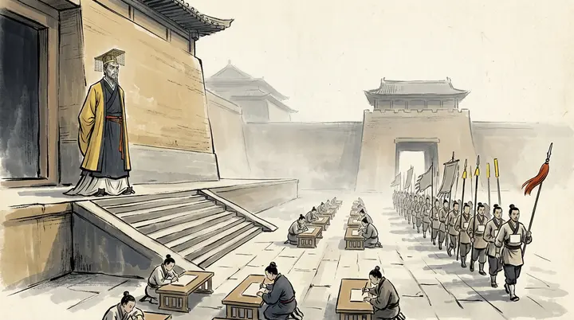
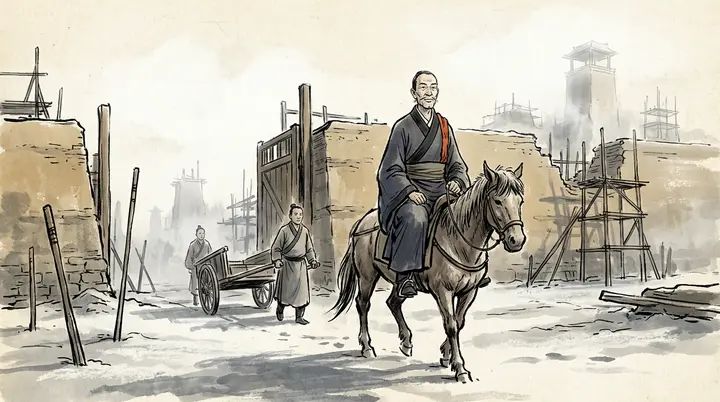
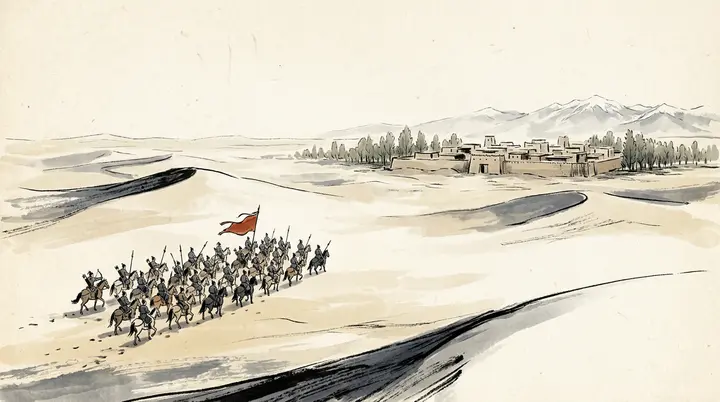
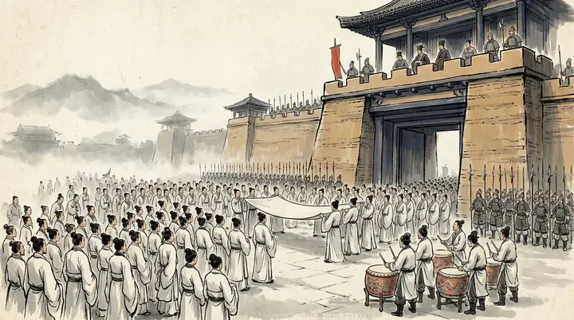
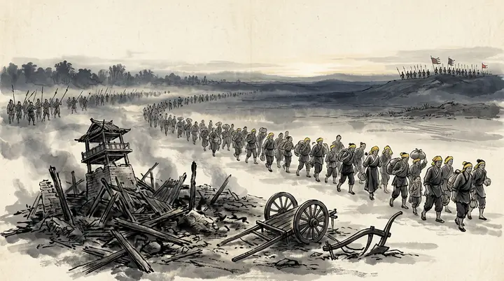